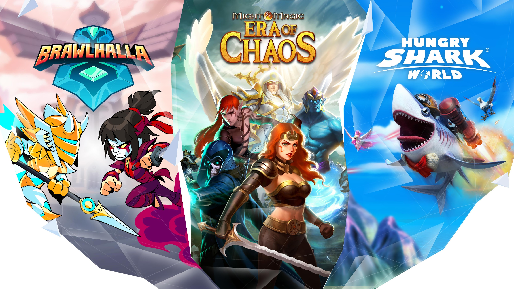
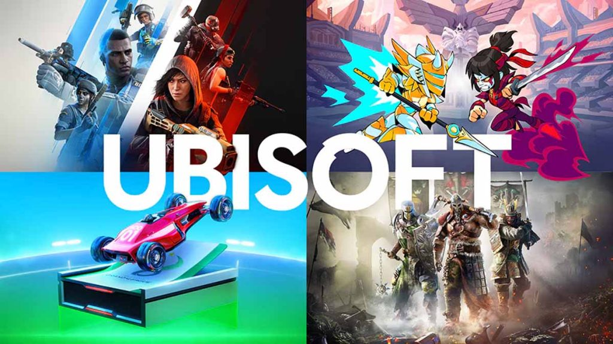

Tencent and Guillemot Brothers Ltd Discuss Privatization of Ubisoft
Last week, Bloomberg reported that Tencent and Guillemot Brothers Ltd have engaged in discussions with their advisors to explore options for stabilizing Ubisoft, one of the world’s largest gaming companies. This move comes after Ubisoft's stock value plummeted by over 50% this year. According to insiders, the companies are considering the possibility of privatizing Ubisoft, though the talks are still in the early stages, and no final decision has been made.
This Bloomberg report quickly affected the market, causing Ubisoft’s stock value to surge by an impressive 40% in less than a week. Following the news, Ubisoft swiftly responded and issued a statement to VGC, confirming that the company regularly reviews its strategic options to improve its financial standing and future prospects.
In this statement, a Ubisoft spokesperson acknowledged the recent rumors and speculations about a potential buyout interest:
“We regularly review all strategic options to make the best decisions for our stakeholders. If necessary, we will share more information with the market at the appropriate time. Currently, management is focused on executing its strategy, which centers on expanding open-world adventures and delivering service-based experiences.”
In recent years, Ubisoft has faced multiple challenges that negatively impacted its financial performance and market value. Last month, the company’s stock price reached an 11-year low. This steep decline followed the delay of Assassin’s Creed Shadows and the underwhelming performance of Star Wars Outlaws, two of Ubisoft's most anticipated titles for this year. Both games were expected to bolster the company's status, but development issues and poor market reception further eroded investor confidence.
Tencent's History with Ubisoft
This is not the first time major gaming companies, such as Tencent, have shown interest in acquiring or merging with Ubisoft. Tencent, one of the largest video game giants in China, purchased a stake in Ubisoft in 2018 as part of efforts to form a closer partnership with the company. Meanwhile, Guillemot Brothers Ltd, owned by the Guillemot family—founders of Ubisoft—remains one of the company’s largest shareholders, consistently seeking to maintain control over the business.
However, privatization is just one of the options under consideration. In recent years, Ubisoft has also faced internal crises, putting its management under substantial pressure. These issues include reports of a toxic workplace culture, employee complaints, and accusations against senior executives. These problems, along with the failure to deliver successful games and frequent delays, have raised concerns among shareholders.
Focus on Service-Based Experiences
Currently, Ubisoft has stated that its focus is on improving the development of its upcoming games and delivering service-based experiences, particularly in multiplayer and online games. This strategy is designed to attract new users and retain existing players. However, the success of this strategy remains uncertain, as the company faces significant challenges in the highly competitive gaming market.
Ultimately, it remains to be seen whether the talks between Tencent and Guillemot Brothers Ltd will result in any definitive actions and whether Ubisoft will enter a new phase with privatization and a potential management overhaul. Although some analysts believe that privatization could give Ubisoft an opportunity for restructuring, the path is still fraught with risks, and the company's future remains unclear.